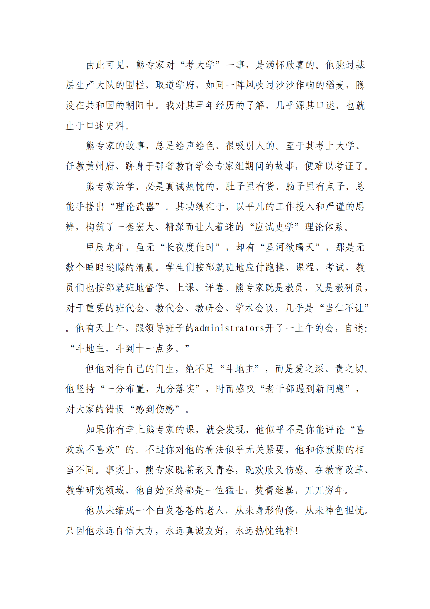
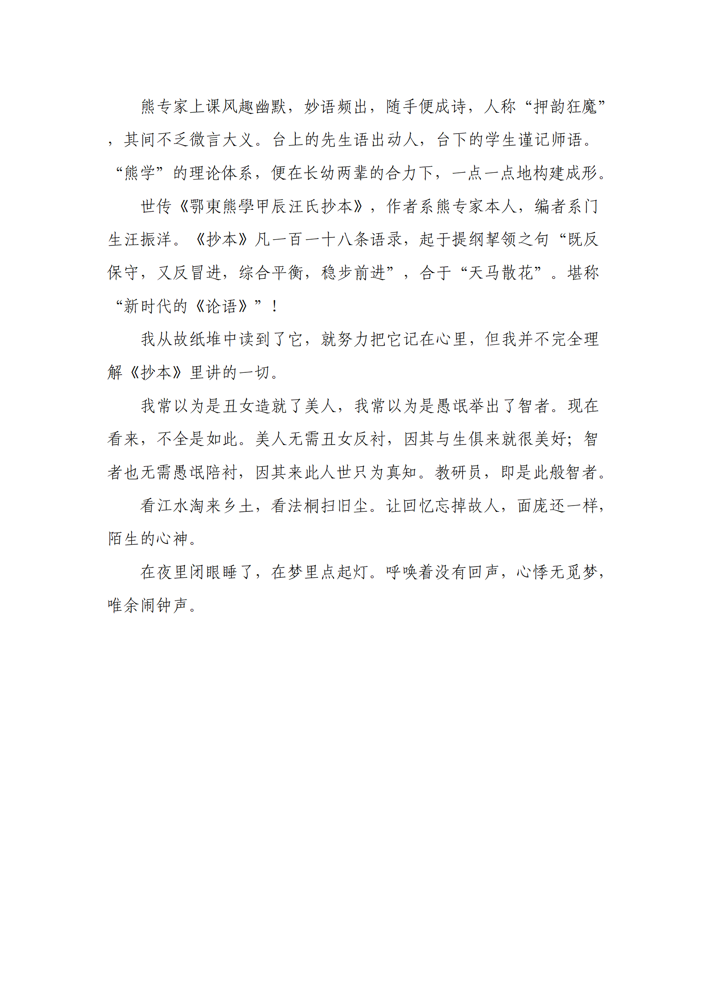
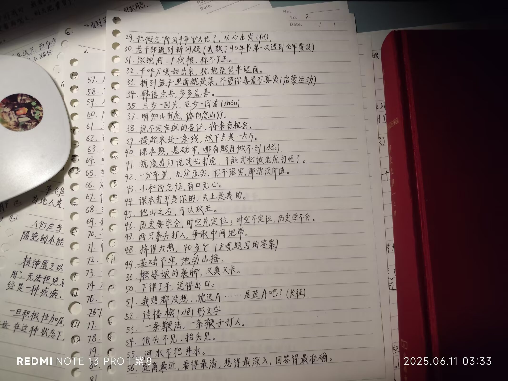
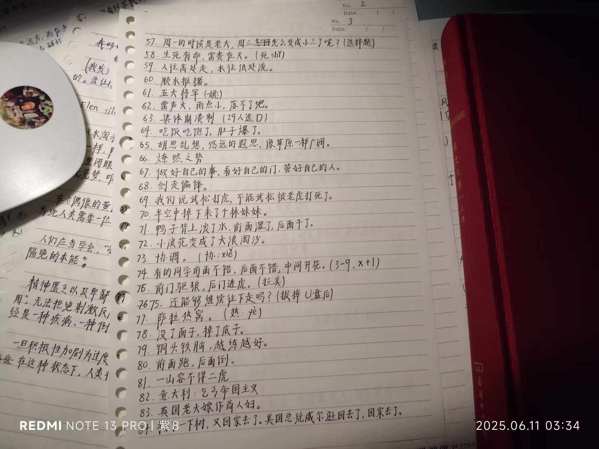
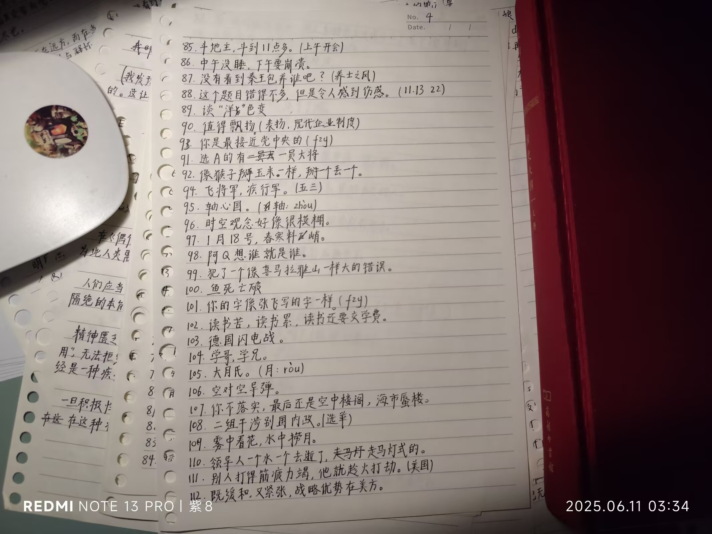
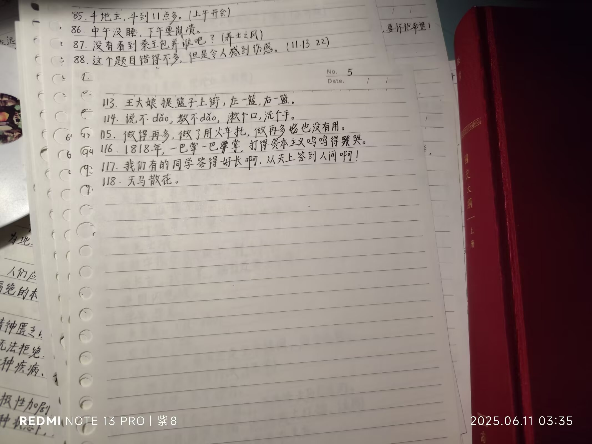

Journal · 2025-06-11
湖北省武汉市
世传《鄂東熊學甲辰汪氏抄本》，作者系熊专家本人，编者系门生汪振洋。《抄本》凡一百一十八条语录，起于提纲挈领之句“既反保守，又反冒进，综合平衡，稳步前进”，合于“天马散花”。堪称“新时代的《论语》”！
我从故纸堆中读到了它，就努力把它记在心里，但我并不完全理解《抄本》里讲的一切。
柴江赣北 : 熊专家的故事是开源故事，人民群众喜闻乐见；但《鄂東熊學甲辰汪氏抄本》《熊专家小传》，是有版权的！转载、引用、打印，须注明出处
柴江赣北 : 小企鹅真是磨人啊！我真不知道《熊专家小传》哪个字违禁了，原文放在说说中，发一次就屏蔽一次
柴江赣北 : 笔者用大号发布一遍，再切换小号查看一遍；小企鹅屏蔽一次，笔者就再修改、发布一次。所幸成功发布。南山可移，此案必不可改！







